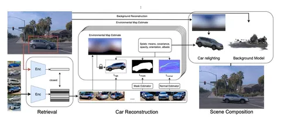

Сегодня разберём нашу статью о новом фреймворке для реконструкции дорожных сцен в задачах автономного вождения — MADrive. Он объединяет в себе две идеи:
Как это работает
Мы декомпозируем сцену на статический фон (дорога, здания, деревья) и динамику (автомобили). Фон восстанавливаем c помощью 3DGS по данным с камер, уже известным положениям камер в проезде и лидарным 3D-точкам (как начальное приближение для положения сплатов).
Для эффективной работы с автомобилями мы предварительно собрали датасет MAD-Cars. В него вошли около 70 тысяч 360-градусных видеозаписей автомобилей разных моделей и цветов.
Чтобы реконструировать автомобили при обработке проезда:
1. Выделяем каждый автомобиль на сцене в 3D-бокс.
2. Получаем 2D-кроп по проекции бокса на кадр.
3. Считаем эмбеддинг SigLIP2 для кропа и уточняем цвет машины с помощью Qwen2.5-VL.
4. Находим похожую машину в MAD-Cars по эмбеддингу и цвету (косинусное сходство).
5. Для найденного автомобиля строим новую 3D-модель c помощью 2D Gaussian Splats. Попутно явно разделяем цвет автомобиля и влияние освещения, при котором записывали 360-градусное видео для MAD-Cars.
6. Переосвещаем восстановленную 3D-модель автомобиля с учётом освещения на реконструируемой сцене. Вставляем модель в сцену на место реальной машины.
Зачем это нужно
MADrive позволяет достоверно генерировать синтетические сенсорные данные для новых дорожных сценариев. MAD-Cars полезен для многих задач 3D Computer Vision — от реконструкции до генерации сцен.
Познакомиться с MADrive и MAD-Cars можно на странице проекта, а узнать больше об их создании — на Хабре.
Разбор подготовил
404 driver not found
